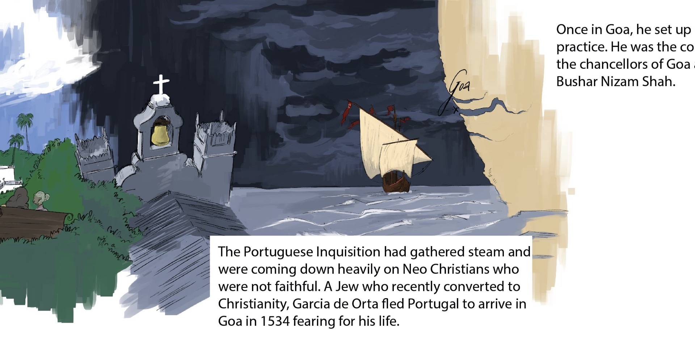
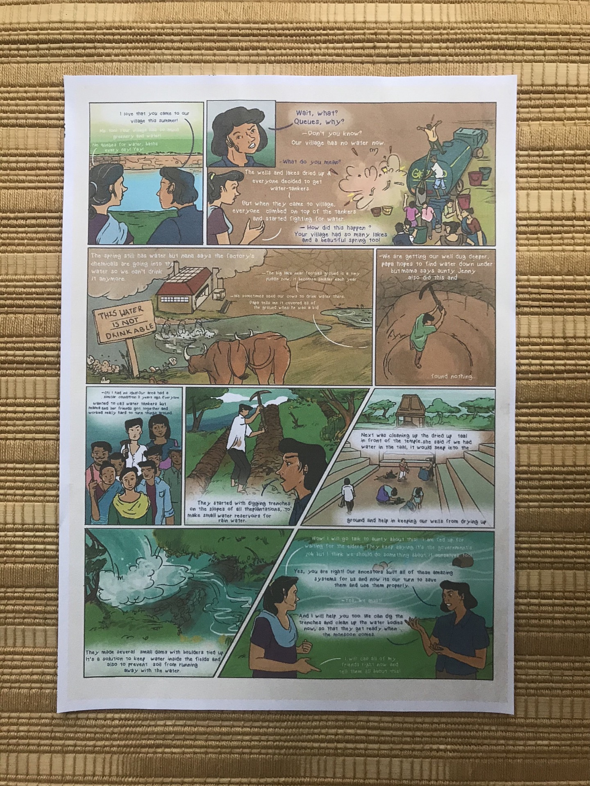
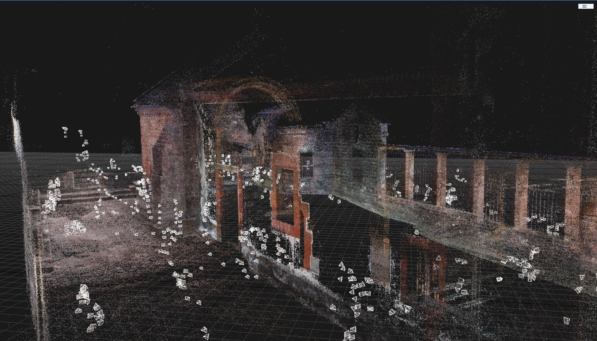
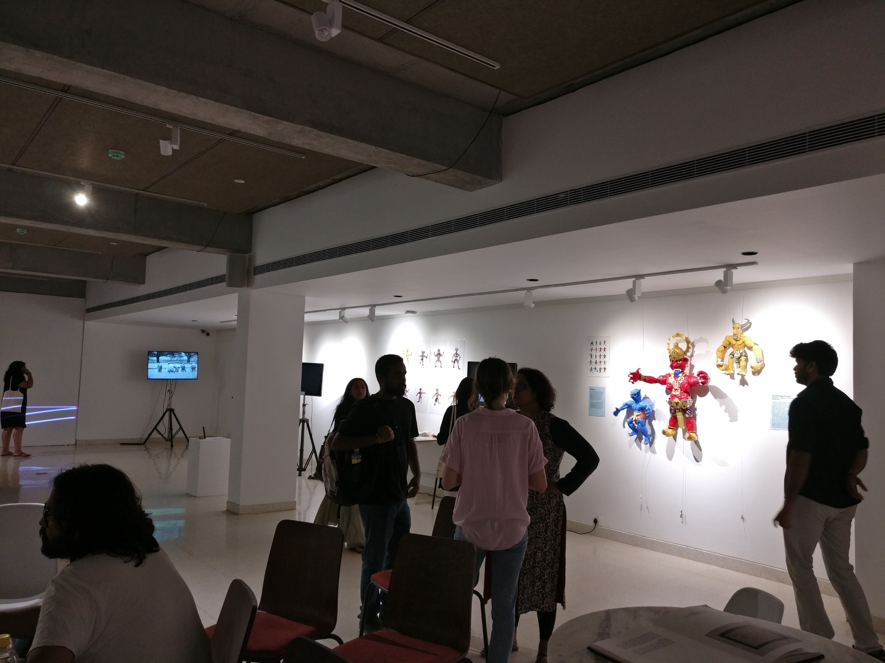
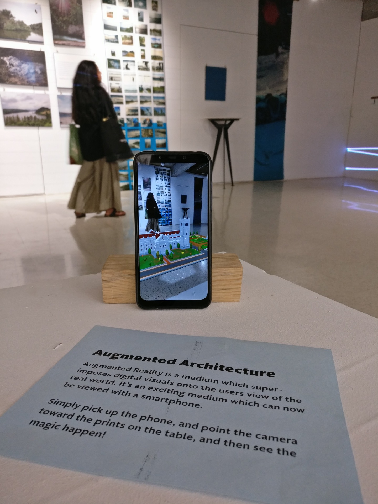
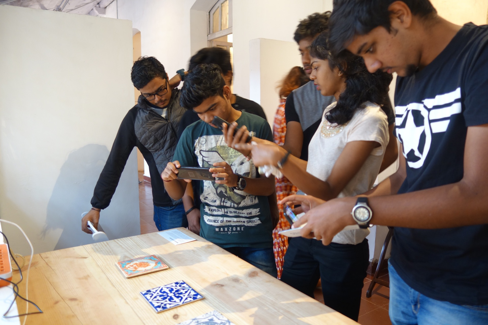
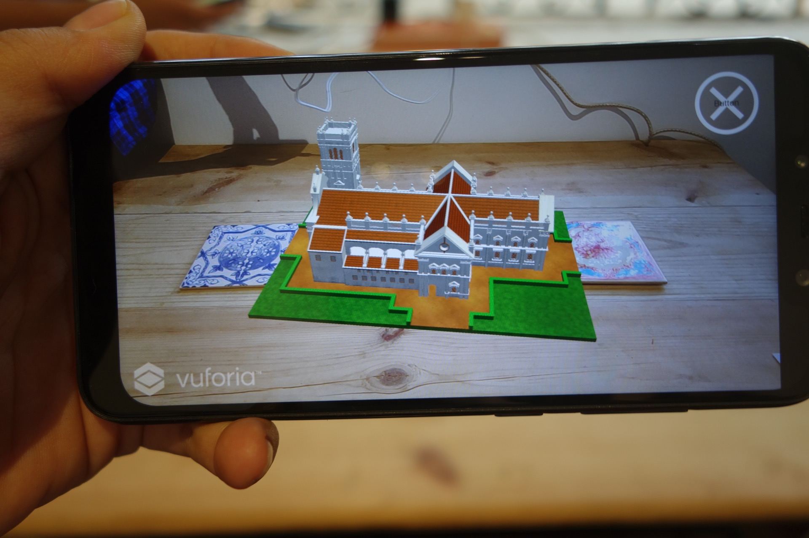
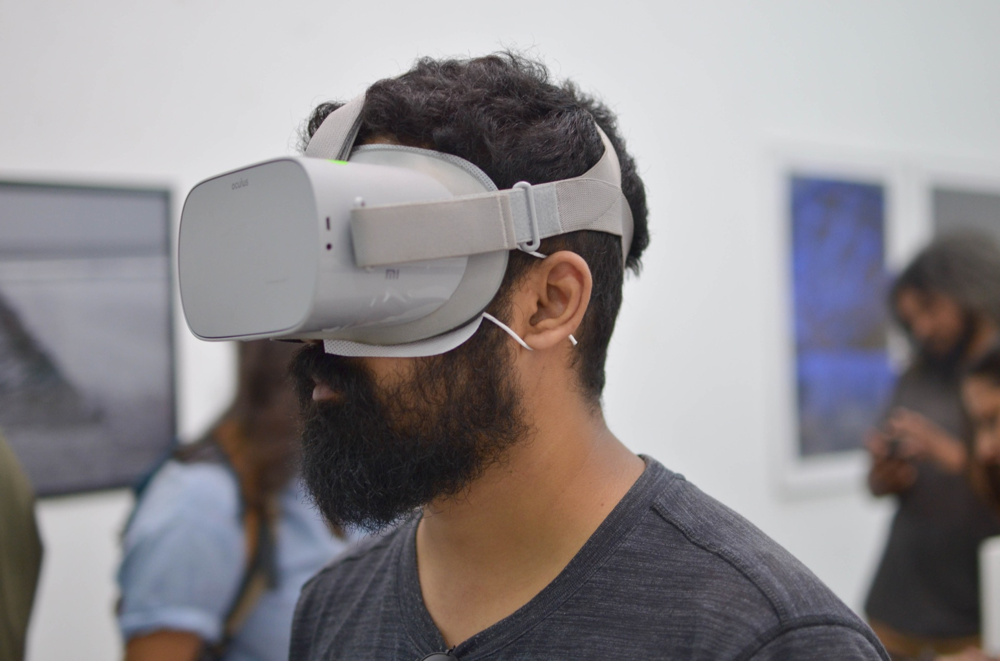

Goa Heritage Project
Overview
Researching, documenting and disseminating various aspects of Goan heritage and culture through immersive, interactive experiences such as augmented reality, virtual reality, games, and interactive storytelling.
Role
Lead Designer and Researcher
Funded by
British Council & Prince Claus Fund
For
Quicksand
The Goa Heritage Project is a year long project funded by the British Council and the Prince Claus Fund to document and disseminate Goan heritage and culture through emergent art and technology platforms such as immersive media, video games and smartphone experiences. Our intention is to create and share a sustainable repository of digital heritage prototypes that are ripe for further development and incubation in partnership with the people and institutions of Goa.

Muse de Goa, a mobile game on living in a village in Goa

Virtual Reality film on the Narkasur Festival
Bringing the voices of people into the design of future heritage experiences is key to the sustainability of culture, and our project explores various routes to participation in the design process. The artistic outcomes of this project live a parallel life as potential frameworks for collaboration that can bring greater vibrance and sustainability of cultural heritage to the state of Goa.

Interactive visual films on the history of Goa

One of many comics created to highlight Goa's natural diversity
Initial research started with a deep-dive into the world of Goan crafts. The research on Goan crafts led to the idea of using mediums such as Augmented Reality and Virtual Reality to document and disseminate the heritage and culture of Goa. The next step was to further understand the capabilities of the mediums we would be working with, and exploring the possibilities of what could be created. An in-depth exploration of the mediums was carried out, to understand the workflow of not only documenting and digitising physical artefacts, but also creating immersive and interactive outputs for our target audience to engage with. During this stage, the the process of photogrammetry was discovered, which was quickly mastered and a few sample outputs were created through which the workflow was tested.

One of the numerous Goan artefacts photogrammetried during the project

Photogrammetry of a Portugese-era church
We also realised that mediums such as Augmented Reality and Virtual Reality were not ideal for all project outputs, and simpler mediums such as comics, films, mobile apps and music videos. Although Extended Reality Mediums of Augmented Reality and Virtual Reality did have their place, it was important to recognise that all mediums have a particular time and place for their ideal use.
One of the key aspects of our research stage was to build new relationships and leverage existing partnerships. We realised that it was very important to have local experts inform the content and direction of our projects. These partners would also ensure that the project we collaboratively work on would have an audience, or a conduit through which to reach the audience through. Although not all collaborations directly led to a project output, the conversations and work from those relationships either contributed to some existing projects, or led to the creation of tangential projects through which we acquired further funding to continue work on specific inquiries.


On display at UnBox Festival 2018



On display at Serendipity Arts Festival and Museum of Goa